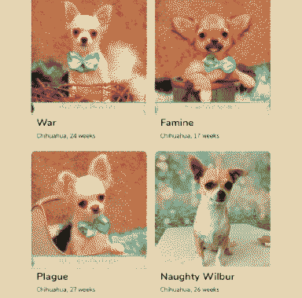

dogs stopped being dog-shaped, like, four hundred years ago.
There’s strays all around Utopia-Planitia. Due to the climate on Mars, most dogs are huge and furry breeds. Many of them are robots and horny clones - thylacine, hyena, molossus - humping any robot lawnmowers they come across. They’re clever, adapting to the changing climate, all scouting around to try and find climates that suit them better.
Eris roams on her own with two hyenas: Landfill, and Roadkill. She’s got lots of names prepared for the rest of the pack… - Birdfeed - Taxidermy - Carcass - Mugshot - Pazuzu?

Enyo would have some some rescued greyhounds, nestled in with biiig fluffy dudes - Tibetan Mastiff, Old English Sheepdogs.